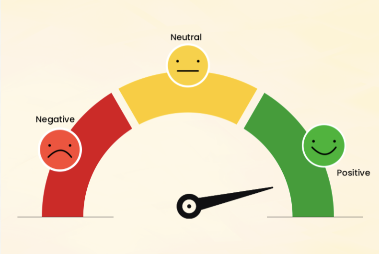

A stroke occurs when a blood vessel in the brain is blocked or bursts, cutting off vital blood and oxygen. Early identification and quick medical intervention are crucial for survival and preventing future heart disease. This project developed a predictive model with 95% accuracy, aiding in early stroke detection. The model can be integrated into clinical decision support systems, improving resource allocation and emergency response times. It also helps identify at-risk individuals, enabling preventive measures that can reduce stroke and related cardiovascular diseases, ultimately leading to better patient outcomes, lower healthcare costs, and improved public health.

Created an interactive The Port of Shanghai Dashboard offers a comprehensive overview of the port's performance metrics, capturing critical operational data from 2004 to 2023. As one of the world’s busiest and most significant ports, the Port of Shanghai handles vast volumes of cargo, making operational efficiency essential for sustaining throughput and meeting global trade demands. This dashboard consolidates data on container throughput, berth utilization, cost efficiency, and resource availability, presenting a clear picture of trends over time.
Data-Driven Insights into Retail Sales
In the Data-Driven Insights into Retail Sales project, I used machine learning and statistical models to analyze retail data and generate actionable sales forecasts. By examining attributes like Year, Month, Supplier, Item Type, Retail Sales, and Warehouse Sales, I identified sales patterns, optimized inventory, and improved marketing strategies. Techniques such as association rule mining, clustering, regression, and dimensionality reduction provided a comprehensive view of retail dynamics, allowing for data-driven stock management, targeted marketing, and accurate demand forecasting. This approach led to increased sales, enhanced customer satisfaction, and improved operational efficiency, establishing it as a powerful tool for driving revenue growth in retail.

In this Social Media Sentiment Analysis project, I analyzed social media data to understand public sentiment, engagement patterns, and trending topics across platforms. By using attributes like Text, Sentiment, Timestamp, User, Platform, Hashtags, Retweets, Likes, Country, and detailed time data (Year, Month, Day, Hour), I uncovered how people feel about specific topics and how these sentiments vary by time and region. This real-time sentiment tracking enables brands to stay connected with audience preferences and reactions, whether for new product launches, crisis management, or long-term brand monitoring. These insights empower companies to be proactive, audience-focused, and more effective in driving engagement, customer satisfaction, and loyalty.
Bike Insurance Prediction
In the Bike Insurance Prediction project, I developed a machine learning model to predict individuals' likelihood of purchasing bike insurance based on personal and vehicle-related factors such as age, vehicle age, and driving history. The model helps insurance companies target high-probability customers, improving marketing efficiency with 87% accuracy. By enabling targeted marketing, it boosts conversion rates, reduces marketing costs, and allows for personalized offers. Additionally, the model aids in demand forecasting, supporting better resource planning. Overall, it empowers insurers to make data-driven decisions, enhancing growth, profitability, and customer relationships.
Medical Insurance Cost Prediction
In the Medical Insurance Cost Prediction , I used various machine learning techniques to predict medical insurance costs based on factors such as age, BMI, smoking habits, and other demographics. The model forecasts insurance expenses for individuals, providing valuable insights for various sectors. Insurance providers can estimate premiums more accurately, leading to fairer pricing and improved risk management. Healthcare institutions can forecast patient costs for better budgeting and resource allocation, while individuals can understand how lifestyle choices impact their future insurance costs, enabling more informed health and financial decisions.
Financial Overview Dashboard for Automotive Industry
Developed a dynamic financial overview dashboard to provide a decade-long analysis of key financial metrics for a major automotive company. This project involved in-depth strategic business analysis, market benchmarking, and financial insights to guide corporate decision-making.The project involved a meticulous approach to strategic business analysis, utilizing vast amounts of financial data to uncover trends, identify growth, and address emerging risks.
Dengue Case Prediction Using Weather Data
This project focuses on predicting dengue cases by leveraging historical weather data to assess environmental conditions that may contribute to the spread of the disease. Using a dataset with 26 attributes, I built a machine learning model that forecasts dengue case occurrences based on various weather parameters. The goal was to enable health authorities to proactively manage and allocate resources based on predicted dengue case volumes.
{kind=link}
{kind=link}